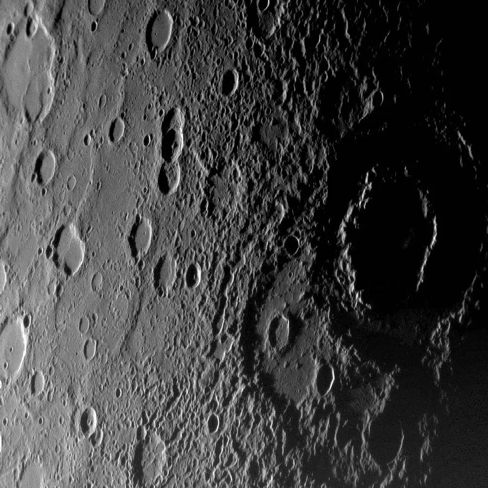

Mercury

Overview
Mercury is the closest planet to the Sun and the smallest planet in our solar system. It has a rocky surface covered with craters, similar to our Moon. Mercury has a very thin atmosphere, which means it cannot retain heat, leading to extreme temperature variations between day and night. Despite its small size, Mercury has a magnetic field, which is unusual for a planet of its size.
Interesting Facts
- Even though Mercury is the closest planet to the Sun, it is not the hottest. Venus is, because its thick atmosphere traps heat.
- Temperatures swing from about 800°F during the day to −290°F at night.
Quick Facts
- Type: Rocky Planet
- Distance from Earth: 48.0-137.9 million miles
- Size: 3,032 miles in diameter
- Discovery: Known since the prehistoric times, so there is no single recorded discoverer